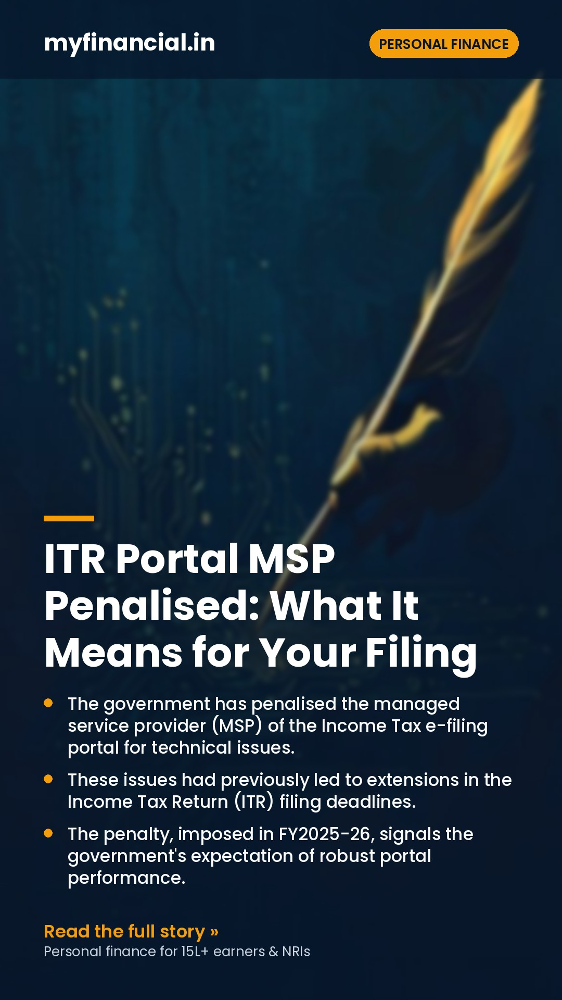
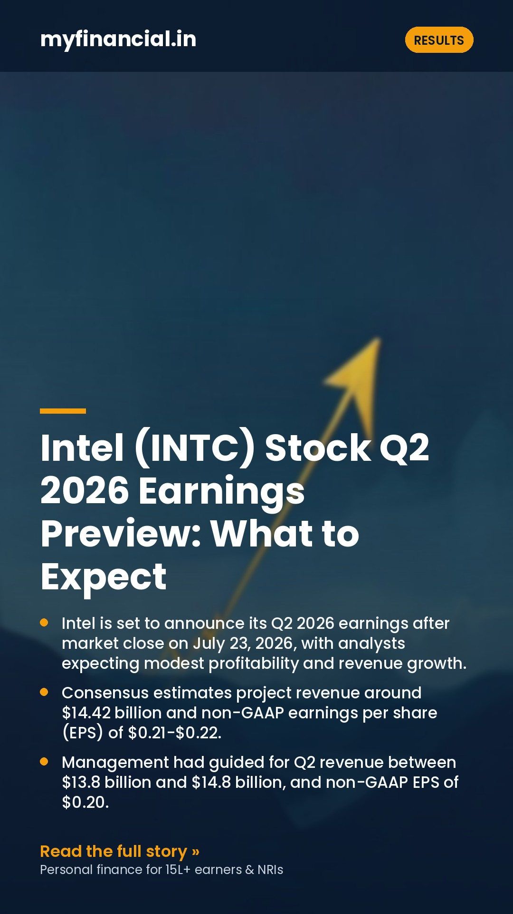
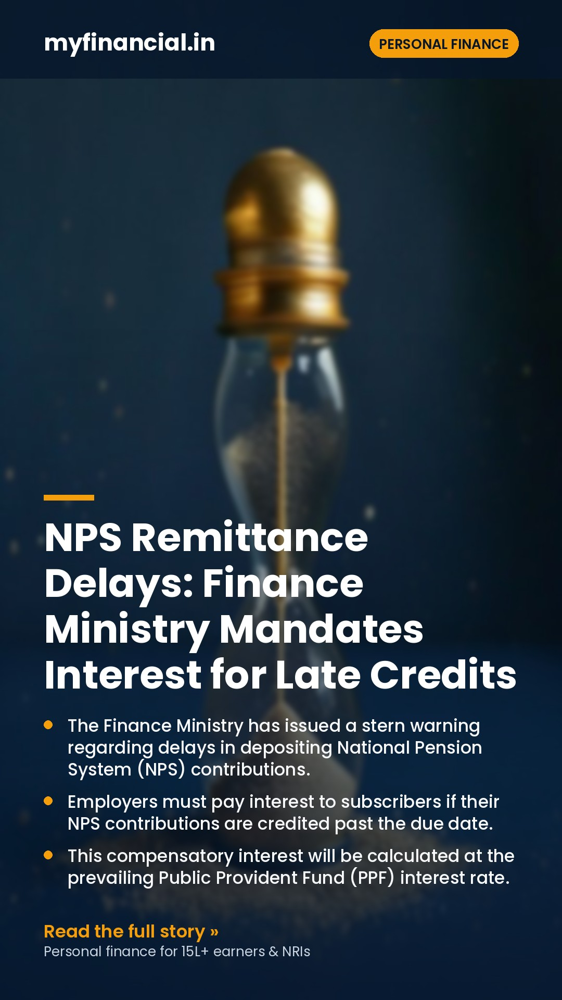
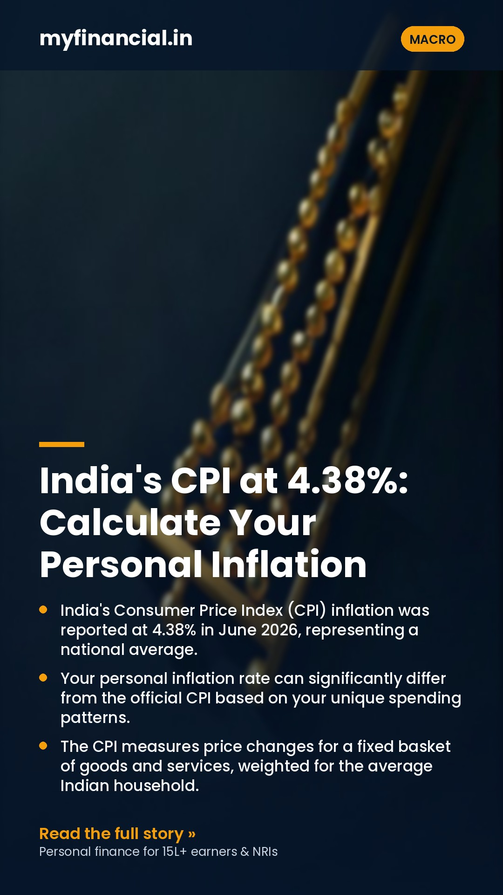
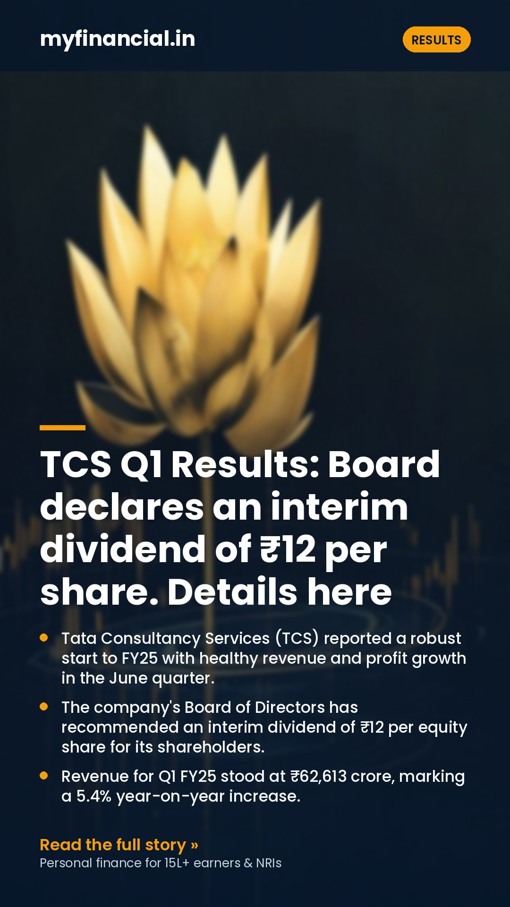
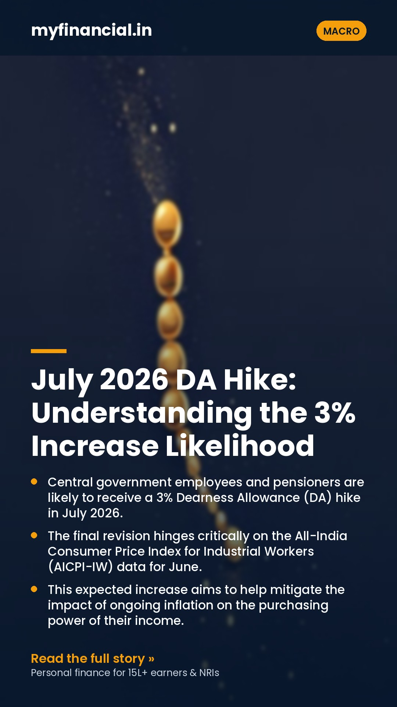
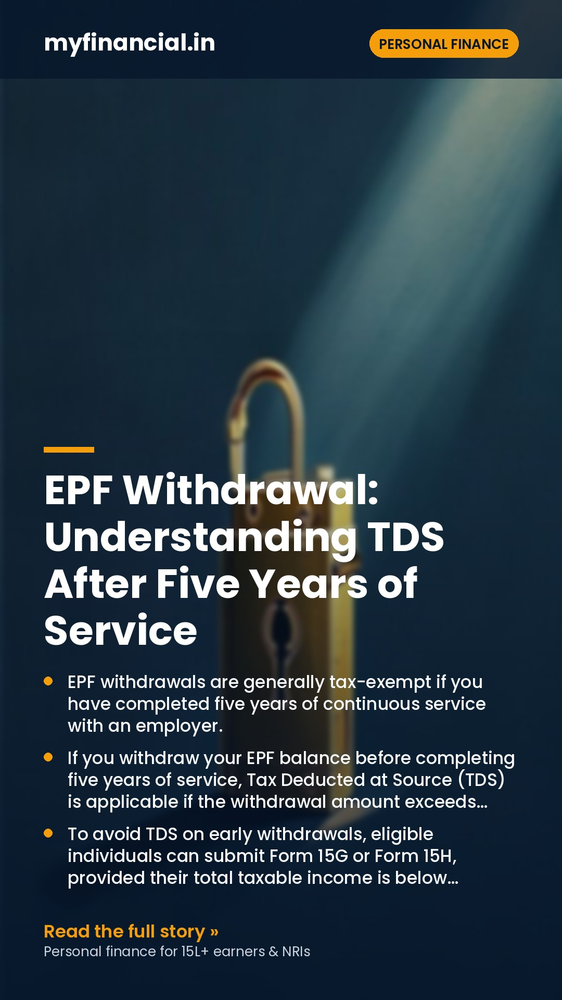
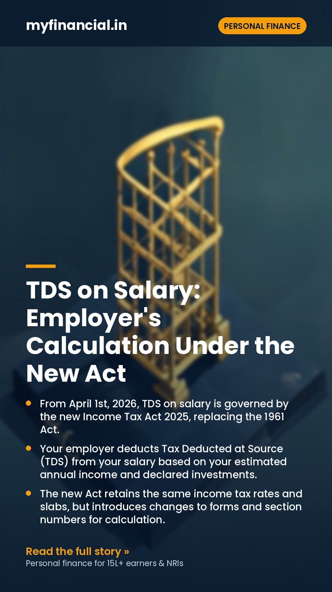

myfinancial.inLinkedIn share assets — poster + ready-to-paste caption
RESULTS · 2026-07-25
American Express: Strong Revenue, Rising Costs & Investor Sentiment
- American Express reported a 10% increase in quarterly revenue, reaching $19.6 billion.
- Total card spending, or billed business, grew 9% year-over-year to $455.8 billion on an FX-adjusted basis.
- Despite robust earnings and a higher revenue outlook, American Express shares experienced a tumble.
- The decline in share price was primarily attributed to concerns over rising costs impacting investor sentiment.
- Healthy consumer activity was noted as a driver for the significant increase in card spending.
Caption

PERSONAL FINANCE · 2026-07-25
ITR Portal MSP Penalised: What It Means for Your Filing
- The government has penalised the managed service provider (MSP) of the Income Tax e-filing portal for technical issues.
- These issues had previously led to extensions in the Income Tax Return (ITR) filing deadlines.
- The penalty, imposed in FY2025-26, signals the government's expectation of robust portal performance.
- This action suggests that taxpayers should not anticipate further ITR deadline extensions due to technical glitches.
- Ensuring timely ITR filing is now more critical than ever to avoid penalties and complications.
Caption
MACRO · 2026-07-25
Gold & Silver Rebound: What Rising Tensions Mean for Your Portfolio
- Global gold and silver prices saw significant increases on July 24th, driven by escalating Middle East tensions.
- Gold surged past $4,070, while silver approached $59, indicating strong investor demand for safe-haven assets.
- Anticipation of future US interest rate hikes also played a role, adding to market uncertainty.
- For Indian investors, this global trend translates into higher rupee-denominated prices for precious metals.
- Considering a strategic allocation to gold and silver can offer portfolio diversification and a hedge against inflation.
Caption
PERSONAL FINANCE · 2026-07-24
Foreign Salary in NRE Account Not Taxable for NRIs: ITAT Clarifies
- The Income Tax Appellate Tribunal (ITAT) Ahmedabad has ruled that foreign salary earned by an NRI outside India is not taxable in India.
- This non-taxable status holds even if the foreign salary is credited to an NRE (Non-Resident External) account in India.
- The mere deduction of TDS (Tax Deducted at Source) using an Indian TAN (Tax Deduction and Collection Account Number) on foreign income does not make it taxable in India.
- The ruling reinforces the principle that an NRI's foreign-sourced income is generally exempt from Indian income tax.
- NRIs should ensure their residential status is correctly determined to avoid such tax demands.
Caption
MACRO · 2026-07-24
Dollar Rises: Iran War Fuels Rate Hike Bets & Your Finances
- The US Dollar has strengthened significantly due to escalating conflict in the Middle East, particularly involving Iran.
- Intensifying geopolitical tensions are raising concerns about potential disruptions to global energy supplies.
- Fears of higher crude oil prices are increasing expectations of persistent inflation worldwide.
- Central banks, especially the US Federal Reserve, may be compelled to keep interest rates higher for longer to combat inflation.
- This scenario has implications for Indian investors, affecting import costs, the Rupee's value, and investment strategies.
Caption

RESULTS · 2026-07-23
Intel (INTC) Stock Q2 2026 Earnings Preview: What to Expect
- Intel is set to announce its Q2 2026 earnings after market close on July 23, 2026, with analysts expecting modest profitability and revenue growth.
- Consensus estimates project revenue around $14.42 billion and non-GAAP earnings per share (EPS) of $0.21-$0.22.
- Management had guided for Q2 revenue between $13.8 billion and $14.8 billion, and non-GAAP EPS of $0.20.
- Investors will closely watch the performance of the Data Center and AI (DCAI) segment and Intel Foundry, crucial for its turnaround.
- Gross margins are expected to be a key focus, with management guiding for approximately 39% for Q2, a slight dip from Q1.
Caption
PERSONAL FINANCE · 2026-07-23
Unutilised CGAS Funds: Don't Let 3-Year Deadline Trigger Tax
- The Capital Gains Accounts Scheme (CGAS) allows you to defer capital gains tax by depositing sale proceeds.
- A common misconception is that tax deferral lasts until funds are withdrawn from CGAS, but this is incorrect.
- The exemption period for utilising CGAS funds is strictly three years from the date of the original asset transfer.
- If funds remain unutilised after this three-year period, they become taxable as long-term capital gains in the year the period expires.
- Proactive tracking and timely utilisation of CGAS funds are crucial to avoid unexpected tax liabilities.
Caption
MACRO · 2026-07-23
SOA vs Demat for MFs: SEBI's New Rule & Your Choice
- SEBI has recently allowed standing instructions for Systematic Withdrawal Plans (SWP) and Systematic Transfer Plans (STP) on mutual fund units held in demat accounts.
- This new facility significantly enhances convenience for investors who prefer to hold their mutual funds in a demat format.
- Statement of Account (SOA) is a direct holding method for mutual funds, often preferred for its potentially lower cost structure.
- Demat accounts offer a consolidated view of all investments (shares, bonds, MFs) and a single nomination facility, simplifying portfolio management.
- The choice between SOA and demat now largely depends on individual priorities: cost savings versus integrated portfolio management and enhanced convenience.
Caption
RESULTS · 2026-07-22
Servotech Renewable Power System Q1: PAT Jumps 75%, Revenue Up 58%
- Servotech Renewable Power System reported a significant 57.7% year-on-year (YoY) increase in revenue for Q1 FY27.
- The company's total revenue stood at ₹216.29 crore for the quarter ending June 30, 2026.
- Gross profit saw an even stronger surge, rising 86.8% YoY to reach ₹48.56 crore.
- Profit After Tax (PAT) grew by a robust 74.5% YoY, amounting to ₹7.94 crore.
- The strong performance was primarily attributed to growth in the company's solar products segment.
Caption
PERSONAL FINANCE · 2026-07-22
ITR Filing 2026: CBDT Upgrades Portal for Smoother Returns
- The Income Tax Department has significantly upgraded its e-filing portal to manage high traffic during the ITR filing season.
- The portal is now equipped to process up to 1 crore Income Tax Returns (ITRs) per day, ensuring greater efficiency.
- These enhancements aim to provide a smoother and faster filing experience for all taxpayers, especially as the July 31 deadline approaches.
- Taxpayers can expect improved stability, reduced downtime, and quicker processing of their tax filings.
- The upgrades are a proactive measure to address past performance issues and enhance user satisfaction.
Caption
MACRO · 2026-07-22
Article 265: Can Government Levy Taxes Without a Law?
- Article 265 of the Indian Constitution mandates that no tax can be imposed or collected by the government without a valid law.
- This constitutional provision acts as a fundamental safeguard against arbitrary taxation by any government authority.
- Every tax, whether by the Central or State government, must be backed by legislation passed by Parliament or a State Legislature.
- It ensures that citizens are protected from taxes that are not duly approved through the democratic legislative process.
- Understanding Article 265 empowers taxpayers to question any tax demand lacking proper legal backing.
Caption
RESULTS · 2026-07-21
BlueStone Jewellery's Q1FY27: Profitability and Strong Revenue Growth
- BlueStone Jewellery reported a significant 49% year-on-year increase in retail sales, reaching ₹733 crore in Q1FY27.
- The company successfully turned profitable during the first quarter of the financial year 2027.
- Despite facing higher gold customs duties, BlueStone achieved a robust 39% growth in same-store sales.
- An improved EBITDA margin was observed, indicating strong operating leverage within the business.
- These positive results are expected to put BlueStone Jewellery shares in focus for investors and market watchers.
Caption
PERSONAL FINANCE · 2026-07-21
HSBC's FCNR Strategy & GIFT City: A New NRI Investment Path
- HSBC is actively attracting Non-Resident Indians (NRIs) with its Foreign Currency Non-Resident (FCNR) deposit offerings.
- FCNR deposits allow NRIs to hold savings in foreign currency, protecting against rupee depreciation.
- India's GIFT City is emerging as a significant international financial hub, offering unique investment opportunities for NRIs.
- HSBC views GIFT City as a key future growth area, potentially integrating its NRI services with its offerings there.
- NRIs can leverage FCNR deposits for stable, hedged savings and explore new avenues through GIFT City for broader financial planning.
Caption
MACRO · 2026-07-21
Claiming Deceased Mutual Funds: SEBI Simplifies Transmission
- The Securities and Exchange Board of India (SEBI) has streamlined the process for claiming mutual fund units of a deceased investor.
- The new framework, implemented through the Association of Mutual Funds in India (AMFI), aims to reduce paperwork and standardise procedures.
- Nominees will find it significantly easier to claim units, requiring fewer documents compared to legal heirs.
- Investors are strongly encouraged to register nominations and keep them updated to ensure a smooth transmission process.
- These changes are designed to make a challenging time less stressful for families dealing with financial settlements.
Caption
PERSONAL FINANCE · 2026-07-19
Foreign Asset Disclosure: Rectifying Missed ITR Filings
- The Annual Information Statement (AIS) on the Income Tax e-filing portal now displays foreign asset and income details for 2022-24.
- This new data availability helps taxpayers ensure accurate disclosure of their global financial holdings in their Income Tax Returns (ITRs).
- Failure to disclose foreign assets in previous ITRs can lead to significant penalties under both the Income Tax Act and the Black Money Act.
- Taxpayers who missed disclosing foreign assets in past ITRs may be able to rectify this by filing an Updated Return (ITR-U).
- Understanding the specific requirements for foreign asset disclosure and the implications of non-compliance is crucial for all resident Indians.
Caption
MACRO · 2026-07-19
MakeMyTrip India IPO: What a Confidential DRHP Means for Investors
- MakeMyTrip has confidentially filed a Draft Red Herring Prospectus (DRHP) with SEBI for an India IPO.
- This filing indicates the online travel giant's intent to list on Indian stock exchanges, 15 years after its Nasdaq debut.
- The IPO will involve an equity share sale by MakeMyTrip Limited and its subsidiary, ibibo Group.
- Key details like the issue size, price band, and exact timeline are currently undisclosed due to the confidential nature of the filing.
- This move could offer Indian investors a direct opportunity to participate in a leading player in the country's growing online travel sector.
Caption
RESULTS · 2026-07-18
Reliance Industries: Promoter Stake Hits 3-Year High in Q1FY26
- Promoters of Reliance Industries Limited (RIL) significantly increased their stake to 50.5% by June 2025, marking the highest level in over three years.
- This increase signals strong insider confidence in the company's future prospects and performance.
- Indian mutual funds also boosted their holding in RIL to 10.11%, reflecting broader institutional belief.
- Analysts are anticipating robust financial results for RIL in Q1FY26, primarily driven by strong performance in its oil-to-chemicals and telecom divisions.
- While the retail sector faces some challenges, the overall outlook for RIL's diversified businesses remains positive according to market experts.
Caption

PERSONAL FINANCE · 2026-07-18
NPS Remittance Delays: Finance Ministry Mandates Interest for Late Credits
- The Finance Ministry has issued a stern warning regarding delays in depositing National Pension System (NPS) contributions.
- Employers must pay interest to subscribers if their NPS contributions are credited past the due date.
- This compensatory interest will be calculated at the prevailing Public Provident Fund (PPF) interest rate.
- The current PPF interest rate, which will be used for compensation, stands at 7.1% per annum.
- Errant officials responsible for these delays could face penalties, underscoring the seriousness of the directive.
Caption
MACRO · 2026-07-18
SEBI Clears Automatic SWP, STP for Demat Mutual Funds
- SEBI has now permitted automatic Systematic Withdrawal Plans (SWP) and Systematic Transfer Plans (STP) for mutual fund units held in demat accounts.
- Previously, these automated facilities were exclusively available for mutual fund units maintained in the Statement of Account (SOA) format.
- This regulatory update significantly enhances convenience for investors who prefer to consolidate all their financial assets in a single demat account.
- It streamlines the process of managing regular income needs or portfolio rebalancing through automated transfers.
- Investors can now enjoy similar operational flexibility for their demat-held mutual funds as they do for SOA-based holdings.
Caption
MACRO · 2026-07-17
Dearness Allowance Hike: Understanding Its Impact on Your Finances
- Dearness Allowance (DA) is a vital component of salary and pension for Central Government employees and pensioners in India.
- It serves as a cost-of-living adjustment, designed to offset the eroding effect of inflation on real income.
- A 3-4% hike in DA is currently anticipated, which would directly increase the take-home pay and pension amounts.
- This bi-annual revision is based on the All-India Consumer Price Index for Industrial Workers (AICPI).
- Understanding DA is crucial for effective personal financial planning, budgeting, and tax considerations.
Caption
PERSONAL FINANCE · 2026-07-16
NRI Tax Filing: When to File ITR After Moving Abroad
- Becoming a Non-Resident Indian (NRI) does not automatically end your tax obligations in India.
- Your residential status for tax purposes is crucial and differs from your immigration status.
- You must file an ITR in India if your gross total income from Indian sources exceeds the basic exemption limit.
- Filing an ITR is often beneficial even if not mandatory, especially for claiming TDS refunds or carrying forward losses.
- Income from Indian property, capital gains from Indian assets, and interest from NRO accounts are typically taxable for NRIs.
Caption
MACRO · 2026-07-16
SEBI's Vision: Unpacking India's Life Cycle Funds
- Life Cycle Funds are an investment approach where asset allocation automatically adjusts based on an investor's age or remaining investment horizon.
- SEBI has played a crucial role in standardising and regulating these funds in India, ensuring investor protection and transparency.
- These funds typically shift from higher-risk equity to lower-risk debt as the investor approaches their financial goal, reducing market volatility exposure.
- They offer a disciplined, hands-off approach to investing, making them suitable for long-term goals like retirement planning.
- While simplifying investment decisions, investors should understand the underlying asset allocation shifts and associated costs.
Caption
RESULTS · 2026-07-15
Signature Global Q1 FY27 Pre-Sales: A Closer Look at Growth
- Signature Global reported pre-sales of ₹1,970 crore for Q1 FY27, indicating strong operational activity.
- This figure represents a robust 25% quarter-on-quarter (QoQ) growth, suggesting positive momentum.
- However, the pre-sales were 25% lower on a year-on-year (YoY) basis compared to Q1 FY26.
- The launch of Tonino Lamborghini Residences was a significant contributor to the QoQ sales surge.
- Investors often track pre-sales closely as a leading indicator of a real estate developer's future revenue and profitability.
Caption
PERSONAL FINANCE · 2026-07-15
Bengaluru Landowner's ₹11.8 Cr Tax Win: Capital Gains Explained
- A Bengaluru resident successfully claimed full tax exemption on capital gains from selling 17 apartments, amounting to ₹11.8 crore.
- The Income Tax Appellate Tribunal (ITAT) ruled that each property sale should be treated as an independent transaction for exemption purposes.
- This landmark decision clarifies that the 'one house' restriction for capital gains exemption applies to the investment made, not the number of properties sold.
- Taxpayers can now claim exemptions under Section 54 or 54F for gains arising from multiple property sales, provided conditions are met for each.
- This ruling offers significant relief and clarity for individuals selling multiple residential properties and reinvesting the proceeds into new homes.
Caption

MACRO · 2026-07-15
India's CPI at 4.38%: Calculate Your Personal Inflation
- India's Consumer Price Index (CPI) inflation was reported at 4.38% in June 2026, representing a national average.
- Your personal inflation rate can significantly differ from the official CPI based on your unique spending patterns.
- The CPI measures price changes for a fixed basket of goods and services, weighted for the average Indian household.
- To calculate your personal inflation, you need to track your household's spending categories and apply MoSPI's sector-specific inflation rates.
- Understanding your personal inflation helps you make more informed decisions about budgeting, savings, and investment planning.
Caption
RESULTS · 2026-07-14
HCL Tech Q1 Results: Key Takeaways for Investors
- HCL Tech reported a Q1 net profit of ₹4,626 crore, marking a significant 20% year-on-year increase.
- Sequentially, the company's profit grew by 3% quarter-on-quarter, indicating steady performance.
- The board declared an interim dividend of ₹12 per equity share, reflecting a commitment to shareholder returns.
- HCL Tech maintained its financial guidance for FY27, suggesting stability in its future outlook.
- Investors should note the consistent profit growth and dividend payout as indicators of the company's health.
Caption
PERSONAL FINANCE · 2026-07-14
ITR Filing 2026: Retaining Digital Tax Documents Securely
- While ITR filing is largely paperless, it is crucial to securely retain all relevant digital tax documents.
- These digital records are essential for responding to income tax notices, assessments, and verifying past tax filings.
- Key documents include Form 16, Form 26AS, AIS/TIS, investment proofs, and bank statements, among others.
- Maintaining organised digital folders and regular backups on secure platforms is a vital best practice for every taxpayer.
- The standard retention period for tax documents is typically 6 to 8 years from the end of the relevant assessment year.
Caption
MACRO · 2026-07-14
DA Hike: Understanding Dearness Allowance Types and Calculation
- Dearness Allowance (DA) is a component of salary paid to government employees and pensioners to offset the impact of inflation.
- It is calculated as a percentage of the basic salary, helping maintain the real value of earnings over time.
- The two primary types are Industrial Dearness Allowance (IDA) for Public Sector Undertaking (PSU) employees and Variable Dearness Allowance (VDA) for central government employees.
- DA calculation is linked to the Consumer Price Index for Industrial Workers (CPI-IW) and is revised periodically, typically twice a year.
- A higher DA effectively increases the take-home pay for eligible employees and pensioners, directly impacting their financial planning.
Caption
PERSONAL FINANCE · 2026-07-13
Reporting Capital Gains on MFs: A Guide for AY26-27
- Accurately reporting capital gains from mutual fund investments in your Income Tax Return is mandatory.
- Equity-oriented and debt-oriented mutual funds are subject to different capital gains tax rules.
- The classification of gains as Short-Term Capital Gains (STCG) or Long-Term Capital Gains (LTCG) depends on the holding period.
- For debt funds, gains from units sold in FY25-26 (AY26-27) are taxed at your income slab rates, irrespective of holding period or purchase date.
- Always reconcile your fund house statements with Form 26AS and Annual Information Statement (AIS) before filing your ITR.
Caption
MACRO · 2026-07-13
US Inflation Data: What it Means for Your Indian Investments
- Upcoming US inflation figures and Federal Reserve policy decisions could significantly influence global financial markets.
- A higher-than-expected US inflation print might prompt the Fed to maintain higher interest rates for longer, impacting foreign investment flows.
- This global sentiment can lead to increased volatility in emerging markets, including India, affecting equity and bond prices.
- A stronger US Dollar, often a consequence of higher US rates, could put pressure on the Indian Rupee, making imports more expensive.
- Indian investors should focus on well-diversified portfolios and understand how these global factors can indirectly affect their domestic holdings.
Caption
RESULTS · 2026-07-12
Why Large & Mid Cap Funds Look Promising Now: An Abakkus View
- An Abakkus Mutual Fund study suggests Large & Mid Cap Funds are an attractive investment category currently.
- The study highlights improving corporate earnings across large and mid-cap companies as a key driver for potential growth.
- Recent market corrections have created reasonable valuations and favourable entry points for long-term investors.
- These funds offer a balanced portfolio, combining the stability of established large-cap companies with the growth potential of mid-cap businesses.
- With stock prices lagging earnings growth, there's potential for valuations to catch up with strengthening fundamentals.
Caption
PERSONAL FINANCE · 2026-07-12
New Tax Regime: 5 Ways to Reduce Your Tax for AY 2026-27
- The new tax regime offers lower tax rates but limits traditional deductions, leading to a common misconception that no tax saving is possible.
- Salaried individuals can still claim a Standard Deduction of ₹50,000 under the new regime from AY 2024-25 onwards.
- Employer contributions to your National Pension System (NPS) account are deductible under Section 80CCD(2).
- Donations to specified funds and institutions under Section 80G can provide tax relief, subject to certain limits.
- Interest paid on a housing loan for a let-out property remains deductible, though rules differ from self-occupied homes.
Caption
MACRO · 2026-07-12
Bank Holidays in July: Plan Your Finances Around Upcoming Closures
- Banks across India, including major players like SBI and HDFC, will observe several holidays between July 13 and July 19, 2026.
- These closures are due to various state-specific and festival holidays, impacting physical branch operations.
- The Reserve Bank of India (RBI) publishes a comprehensive calendar of bank holidays for public reference.
- While branches will be shut, digital banking services such as UPI, net banking, and mobile banking will remain fully functional.
- It is highly advisable for individuals and businesses to check the holiday calendar and plan their financial transactions in advance to avoid any inconvenience.
Caption
RESULTS · 2026-07-11
TCS Q1 FY27 Earnings: Navigating Growth Amidst Margin Pressures
- Tata Consultancy Services (TCS) reported a consolidated net profit of ₹13,349 crore for Q1 FY27, a 4.6% year-on-year increase.
- Revenue from operations grew 14% year-on-year to ₹72,275 crore, surpassing analyst estimates.
- Operating margin compressed by 130 basis points sequentially to 24.0% due to annual wage hikes and AI investments.
- The company secured a strong total contract value (TCV) of $9.5 billion, including a major AI-led deal with SKF.
- AI services revenue reached an annualised run rate of $2.6 billion, reflecting significant sequential growth.
Caption
PERSONAL FINANCE · 2026-07-11
ITR Login Password Reset: Alternatives Without Aadhaar OTP
- If you've forgotten your Income Tax e-filing portal password, several methods allow you to reset it.
- You can regain access even if you don't have your Aadhaar-linked mobile number handy.
- Net Banking is a common and secure method to reset your password directly from your bank's portal.
- A Digital Signature Certificate (DSC) provides another robust option for password reset, especially for businesses.
- Utilising a pre-set secret question or an OTP sent to your e-filing registered email/mobile also works.
Caption
MACRO · 2026-07-11
Bank Holidays: Why July 11 Sees Banks Closed Across India
- Public and private sector banks across India are closed today, July 11, due to the second Saturday rule.
- This closure is a standard practice implemented by the Reserve Bank of India (RBI) for all scheduled commercial banks.
- While physical branches are inaccessible, digital banking channels like net banking, mobile banking, and ATMs remain fully operational.
- Customers should plan their critical transactions, such as cheque deposits or large cash withdrawals, keeping these holidays in mind.
- The RBI's holiday calendar includes national holidays, state-specific festivals, and designated Saturdays and Sundays.
Caption

RESULTS · 2026-07-10
TCS Q1 Results: Board declares an interim dividend of ₹12 per share. Details here
- Tata Consultancy Services (TCS) reported a robust start to FY25 with healthy revenue and profit growth in the June quarter.
- The company's Board of Directors has recommended an interim dividend of ₹12 per equity share for its shareholders.
- Revenue for Q1 FY25 stood at ₹62,613 crore, marking a 5.4% year-on-year increase.
- Net profit for the quarter rose by 7.7% year-on-year to ₹12,040 crore, exceeding market expectations.
- Emerging markets, particularly India, showed strong growth, contributing significantly to the overall performance.
Caption
PERSONAL FINANCE · 2026-07-10
Geopolitical Events: What Mutual Fund Investors Should Do
- Geopolitical events like the US-Iran conflict can cause significant short-term volatility in specific market sectors.
- Chasing recent performance, such as the surge in defence stocks or the dip in IT, is generally a risky strategy for long-term investors.
- Diversified mutual funds, across various asset classes and sectors, help cushion portfolios against such concentrated risks.
- Systematic Investment Plans (SIPs) are effective tools to navigate volatile markets by averaging out purchase costs over time.
- Investors should always prioritise their long-term financial goals and asset allocation over reacting to daily news cycles.
Caption
MACRO · 2026-07-10
Why Cupid Share is Rising: Understanding the Factors Behind the Rally
- Cupid Ltd. has seen a significant surge in its share price, driven by strong business fundamentals and market sentiment.
- The company's focus on manufacturing male and female condoms, lubricants, and diagnostic kits, particularly for global tenders, underpins its growth.
- Robust financial performance, including healthy revenue growth and a strong order book, has been a key catalyst for investor interest.
- Strategic initiatives like capacity expansion and diversification into new product lines are expected to support future growth.
- However, the rally's sustainability hinges on continued execution, managing competition, and navigating raw material costs and regulatory changes.
Caption
PERSONAL FINANCE · 2026-07-09
Open-Market Buybacks: Taxing Your Gains and Investor Strategy
- SEBI has reintroduced open-market share buybacks, effective August 1, 2026, allowing companies to repurchase their shares via stock exchanges.
- Unlike tender offer buybacks, gains from open-market buybacks are taxed as capital gains for the investor, not as a Dividend Distribution Tax (DDT) for the company.
- Short-Term Capital Gains (STCG) are taxed at your applicable slab rate, while Long-Term Capital Gains (LTCG) over ₹1 lakh are taxed at 10% without indexation.
- Investors should weigh the buyback price against their acquisition cost, holding period, and future prospects of the company before selling.
- The reintroduction aims to improve market efficiency and provide companies with more flexibility in capital allocation.
Caption

MACRO · 2026-07-09
July 2026 DA Hike: Understanding the 3% Increase Likelihood
- Central government employees and pensioners are likely to receive a 3% Dearness Allowance (DA) hike in July 2026.
- The final revision hinges critically on the All-India Consumer Price Index for Industrial Workers (AICPI-IW) data for June.
- This expected increase aims to help mitigate the impact of ongoing inflation on the purchasing power of their income.
- The government's official announcement typically follows Cabinet approval and a thorough review of the latest inflation figures.
- A DA hike directly boosts take-home pay and pension amounts, providing essential financial relief to beneficiaries.
Caption
PERSONAL FINANCE · 2026-07-08
ITR 2026: Senior Citizens Can Claim ₹50,000 Medical Deduction
- Senior citizens (60 years and above) can claim a deduction of up to ₹50,000 under Section 80D of the Income Tax Act.
- This deduction is available for medical expenses incurred, even if they do not have a health insurance policy.
- To avail this benefit, senior citizens must opt for the old tax regime when filing their Income Tax Return (ITR).
- The expenses covered include medical treatment, consultation fees, and other related costs for the senior citizen or their dependent parents.
- This provision helps reduce the taxable income for eligible senior citizens, offering significant tax savings.
Caption
MACRO · 2026-07-08
Gold & Silver Prices Today: Geopolitics and Dollar Impact
- Global gold and silver prices recently edged lower in international markets, influenced by rising geopolitical tensions and a stronger US dollar.
- While Middle East tensions typically boost safe-haven demand, a firm US dollar often makes dollar-denominated commodities like gold more expensive for other currency holders.
- Anticipation surrounding the US Federal Reserve's upcoming meeting minutes also contributed to market caution, as potential interest rate signals affect non-yielding assets.
- For Indian investors, domestic gold and silver prices are determined by a combination of these international trends, the Rupee-Dollar exchange rate, and local demand-supply dynamics.
- Investors should view precious metals as a long-term portfolio diversifier rather than a short-term speculative play, understanding their role in hedging against inflation and economic uncertainty.
Caption
PERSONAL FINANCE · 2026-07-07
India's Social Security Net: Navigating Your Retirement Benefits
- India's "social security" primarily refers to a system of government-backed retirement and welfare schemes, not a single universal benefit like in some Western countries.
- Key pillars include the Employees' Provident Fund (EPF), National Pension System (NPS), and other specific government schemes.
- EPF is mandatory for most salaried employees, with contributions from both employee and employer building a tax-efficient retirement corpus.
- NPS is a voluntary, market-linked pension scheme open to all citizens, offering flexibility and tax benefits for long-term retirement planning.
- Recent PFRDA updates have made NPS withdrawals more flexible, allowing higher lump-sum withdrawals at retirement for non-government subscribers.
Caption
MACRO · 2026-07-07
FPIs' Cash Buying Masks Caution in India Markets
- Recent Foreign Portfolio Investor (FPI) cash purchases in Indian equities do not signal a strong bullish shift in sentiment.
- Market experts suggest these purchases are primarily due to the unwinding of reverse arbitrage positions.
- Reverse arbitrage involves profiting from price differences between the spot and derivatives markets, often by selling in cash and buying in futures.
- The closure of these positions, especially after the West Asia ceasefire, led to FPIs buying cash equities to cover their short positions.
- Retail investors should understand these technical flows and not misinterpret them as fundamental long-term buying interest.
Caption
RESULTS · 2026-07-06
Indian IT Faces H1FY27 Headwinds: Decoding Corporate Challenges
- Indian IT companies are grappling with significant challenges, leading to a projected "washout" first half of FY27.
- The rapid advancements in Artificial Intelligence (AI), particularly from OpenAI and Anthropic, are fundamentally disrupting traditional IT business models.
- This technological shift is fueling structural growth concerns for the sector, questioning the long-term sustainability of established services.
- Companies are under pressure to adapt quickly, focusing on GenAI integration and re-evaluating their service offerings.
- Investors need to carefully assess the evolving landscape, as these developments could lead to a re-rating of IT sector valuations.
Caption

PERSONAL FINANCE · 2026-07-06
EPF Withdrawal: Understanding TDS After Five Years of Service
- EPF withdrawals are generally tax-exempt if you have completed five years of continuous service with an employer.
- If you withdraw your EPF balance before completing five years of service, Tax Deducted at Source (TDS) is applicable if the withdrawal amount exceeds ₹50,000.
- To avoid TDS on early withdrawals, eligible individuals can submit Form 15G or Form 15H, provided their total taxable income is below the basic exemption limit.
- Partial withdrawals from EPF are allowed under specific circumstances, such as medical emergencies, home purchase, or children's education and marriage, and these are typically tax-free.
- The EPF claim process can be conveniently completed online through the EPFO portal, or via an offline application.
Caption
MACRO · 2026-07-06
Dearness Allowance Hike: Decoding Employee Demands and Your Finances
- Central government employee groups are pressing for several key changes related to Dearness Allowance (DA).
- A primary demand is the merger of DA with basic pay once it crosses a significant threshold, typically 50%.
- Employees also seek a more robust and transparent mechanism for inflation adjustment to ensure real wages are protected.
- Restoration of DA arrears, which were frozen during the pandemic, is another crucial point for many.
- These demands aim to improve take-home salaries and retirement benefits for a large segment of the workforce and pensioners.
Caption
RESULTS · 2026-07-05
Paying LIC Premiums Online: A Step-by-Step Guide
- Paying your Life Insurance Corporation (LIC) premiums online offers unparalleled convenience, allowing payments anytime, anywhere.
- LIC provides multiple digital channels for premium payment, including its official website, the 'Pay Direct' option, and its dedicated mobile app.
- Policyholders can use various payment methods like UPI, Net Banking, Debit Cards, and Credit Cards for their online transactions.
- E-receipts are generated instantly upon successful payment and are valid for income tax purposes, eliminating the need for physical receipts.
- It is crucial to ensure policy details are correct and to avoid duplicate payments, especially if standing instructions are already in place.
Caption
PERSONAL FINANCE · 2026-07-05
Understanding IPO Taxation in India: STCG, LTCG & ITR Guide
- Gains from selling IPO shares are taxed as capital gains once the shares are listed on the stock exchange.
- Short-Term Capital Gains (STCG) apply if listed shares are sold within 12 months from the date of allotment.
- Long-Term Capital Gains (LTCG) apply if listed shares are held for more than 12 months from the date of allotment.
- STCG on listed equity is currently taxed at 20% under Section 111A, provided Securities Transaction Tax (STT) is paid.
- LTCG on listed equity is taxed at 12.5% on gains exceeding ₹1.25 lakh under Section 112A, with STT paid.
Caption
MACRO · 2026-07-05
Gold Prices Dip: What Could Spark the Next Rally?
- Gold prices have recently experienced a correction, moving away from their previous highs due to various global factors.
- A strong US dollar and rising global interest rates have been key contributors to this downward pressure on gold.
- The future trajectory of gold prices will largely depend on evolving macroeconomic trends and geopolitical developments.
- Potential triggers for a significant gold rally include escalating trade tensions, persistent inflation, and renewed recessionary fears.
- Consistent gold purchases by central banks globally continue to provide a foundational support for demand and prices.
Caption
MACRO · 2026-07-04
Gold Prices Dip: What Could Spark the Next Rally?
- Gold prices have seen a recent correction, moving away from their previous highs.
- Key global factors like trade policy, inflation, and geopolitical tensions are crucial for gold's future direction.
- Central bank gold buying and fears of a global recession could significantly boost demand.
- For Indian investors, gold acts as a traditional safe-haven asset, offering portfolio diversification.
- Understanding these macro triggers helps in making informed investment decisions about gold.
Caption
PERSONAL FINANCE · 2026-07-03
Bajaj Auto Buyback: Understanding Your Capital Gains Tax
- Bajaj Auto's ₹5,632 crore share buyback will be taxed under a new capital gains framework effective April 1, 2026.
- Under the new rules, buyback proceeds are now treated as capital gains for shareholders, not as a dividend distribution tax for the company.
- Shareholders will need to calculate short-term or long-term capital gains based on their holding period and original acquisition cost.
- The new framework aims to simplify taxation for shareholders by aligning buyback proceeds with other capital asset sales.
- Non-Resident Indians (NRIs) tendering shares in the buyback will also be subject to these capital gains provisions.
Caption
MACRO · 2026-07-03
Carlsberg India IPO: What It Means for Indian Investors
- Danish brewing major Carlsberg has filed draft papers for an Initial Public Offering (IPO) of its Indian subsidiary with SEBI.
- This move allows Carlsberg to unlock shareholder value and tap into India's vibrant equity markets.
- The IPO is part of a broader trend of multinational corporations listing their Indian units to fuel growth and provide liquidity.
- Retail investors will soon have an opportunity to invest directly in one of India's prominent brewing companies.
- Evaluating the company's financials, market position, and future growth prospects will be crucial for potential investors.
Caption
RESULTS · 2026-07-02
Adani Green Energy Q1FY27 Results: What to Watch For
- Adani Green Energy's Board will meet on July 22, 2026, to approve its Q1FY27 financial results.
- For the March-ending quarter (Q4FY26), the company reported a 34% year-on-year (YoY) increase in consolidated net profit to ₹514 crore.
- Investors should keenly observe key operational metrics like energy sales, operational capacity, and revenue growth.
- Analysis of EBITDA margins, interest costs, and overall debt management will be crucial for assessing financial health.
- Management commentary on future capacity additions, strategic plans, and the renewable energy outlook will provide vital insights.
Caption

PERSONAL FINANCE · 2026-07-02
TDS on Salary: Employer's Calculation Under the New Act
- From April 1st, 2026, TDS on salary is governed by the new Income Tax Act 2025, replacing the 1961 Act.
- Your employer deducts Tax Deducted at Source (TDS) from your salary based on your estimated annual income and declared investments.
- The new Act retains the same income tax rates and slabs, but introduces changes to forms and section numbers for calculation.
- Accurate investment declarations via Form 12BB are crucial to ensure your employer deducts the correct amount of TDS.
- Form 16, issued by your employer, provides a summary of your gross salary, declared deductions, and the TDS deducted and deposited.
Caption
MACRO · 2026-07-02
SEBI's Performance-Linked Fee vs. TER: What It Means for Your Mutual Funds
- SEBI has proposed a new framework to link mutual fund fees directly to a scheme's performance.
- This model aims to replace or supplement the existing Total Expense Ratio (TER) system.
- Under the proposed system, fund managers would earn higher fees for outperforming a benchmark and potentially lower fees for underperformance.
- Mutual fund houses are expressing concerns due to operational complexities and potential revenue volatility.
- The move seeks to better align the interests of fund managers with those of investors, promoting merit-based compensation.
Caption
PERSONAL FINANCE · 2026-07-01
Section 80C Deductions: Full List & The ₹1.5 Lakh Limit Explained (FY 2025-26)
- Section 80C allows individuals and Hindu Undivided Families (HUFs) to reduce their taxable income by investing in or spending on specific instruments.
- The maximum deduction available under Section 80C is ₹1.5 lakh in a financial year, which is a combined limit for all eligible investments and expenses.
- Popular options include Public Provident Fund (PPF), Equity Linked Savings Schemes (ELSS), life insurance premiums, and Employees' Provident Fund (EPF) contributions.
- Other eligible deductions cover home loan principal repayments, children's tuition fees, and stamp duty/registration charges for a new house.
- Utilising Section 80C effectively is a fundamental part of tax planning, helping to lower your overall tax liability.
Caption
MACRO · 2026-07-01
Gold Loans Surge: What RBI's Financial Stability Report Reveals
- Gold loans are now India's fastest-growing retail credit segment, as per the latest RBI Financial Stability Report (FSR).
- They have shown a remarkable Compound Annual Growth Rate (CAGR) of 42.4% since March 2024.
- This growth is nearly double the 23% expansion seen in other non-housing retail loan categories.
- The rapid increase signals a shift in consumer borrowing patterns and potential implications for financial stability.
- While offering quick liquidity, borrowers must understand the risks associated with pledging gold.
Caption
PERSONAL FINANCE · 2026-06-30
Old Tax Regime: Slabs & Deductions for FY 2025-26
- The old tax regime remains an option for taxpayers in FY 2025-26 (AY 2026-27), despite the new regime becoming the default.
- It allows a wide array of deductions and exemptions, which can significantly reduce your taxable income.
- Key deductions include Section 80C, 80D, HRA, and interest on home loans under Section 24(b).
- Taxpayers with substantial investments, insurance premiums, and home loan EMIs often find the old regime more beneficial.
- A careful comparison of your potential tax liability under both regimes is crucial before making your choice for the financial year.
Caption
MACRO · 2026-06-30
SEBI Proposal: FPIs in Physically Settled Commodity Trades
- SEBI is considering allowing Foreign Portfolio Investors (FPIs) to participate in physically settled commodity derivative contracts.
- This initiative aims to remove a significant tax hurdle that has previously deterred FPIs from this segment.
- FPIs have largely avoided these contracts due to ambiguities surrounding the tax treatment of physical delivery.
- Opening up this market could enhance liquidity and price discovery in India's commodity exchanges, particularly for bullion and base metals.
- The move is expected to attract more foreign capital and deepen India's financial markets.
Caption
PERSONAL FINANCE · 2026-06-29
Missed FD Income: How to Rectify and What Happens If You Don't
- Fixed Deposit (FD) interest income is fully taxable under Indian income tax laws.
- If you missed declaring FD interest in your original Income Tax Return (ITR), you can file an Updated Return (ITR-U).
- ITR-U allows corrections for up to two assessment years from the end of the relevant assessment year.
- Filing an ITR-U incurs an additional tax penalty, which increases with the delay in filing.
- Ignoring undeclared FD income can lead to scrutiny, higher penalties, and potential prosecution by the Income Tax Department.
Caption
PERSONAL FINANCE · 2026-06-28
SCSS: Securing a ₹20,500 Monthly Income for Senior Citizens
- The Senior Citizens' Savings Scheme (SCSS) is a government-backed scheme designed to provide a stable income for Indian senior citizens.
- It offers predictable returns, making it a reliable option for post-retirement financial planning.
- Investments up to ₹30 lakhs in SCSS can currently generate an approximate monthly income of ₹20,500 at an assumed 8.2% annual interest rate.
- SCSS investments qualify for tax benefits under Section 80C of the Income Tax Act, 1961, up to ₹1.5 lakhs annually.
- The scheme has a tenure of five years, which can be extended for an additional three years, providing long-term security.
Caption
MACRO · 2026-06-28
RBI Cracks Down on Bank's "Dark Patterns" and Mis-selling
- The Reserve Bank of India (RBI) has issued new guidelines to curb unfair sales practices by banks and financial service providers.
- These guidelines specifically target "dark patterns" like forced bundling of products and hidden opt-outs in digital interfaces.
- Banks are now mandated to ensure transparency, provide clear product information, and obtain explicit customer consent for all offerings.
- The new rules aim to protect customers from mis-selling of unsuitable products and improve ethical conduct in financial services.
- This move is expected to empower customers and foster greater trust in the banking system by preventing deceptive tactics.
Caption
RESULTS · 2026-06-27
HDFC AMC's Upcoming June Quarter Results: What Investors Should Watch
- HDFC Asset Management Company (AMC) will announce its financial results for the June 2026 quarter on July 15, 2026.
- The company's trading window for shares will be closed from July 1 to July 17, 2026, ahead of the board meeting.
- Investors should focus on key metrics like Assets Under Management (AUM), revenue, and profit after tax (PAT) in the upcoming announcement.
- Management commentary on market trends, regulatory changes, and future growth strategies will be crucial for long-term investors.
- HDFC AMC recently launched a new 'Growth for GOOD Portfolio' strategy, indicating a focus on sustainable investments.
Caption
PERSONAL FINANCE · 2026-06-27
ITR-1 (Sahaj) AY 2026-27: Your Guide to Simplified Tax Filing
- ITR-1 (Sahaj) is the simplest income tax return form, designed for resident individuals with a total income up to ₹50 lakhs.
- It covers income primarily from salary, one house property, and other sources like interest and family pension.
- If you have income from more than one house property or any capital gains, you are generally not eligible to file ITR-1.
- The online filing process for ITR-1 is user-friendly, with pre-filled data available on the Income Tax e-filing portal.
- Ensure all your income details and deductions are accurately reported to avoid future discrepancies.
Caption
MACRO · 2026-06-27
Zerodha's New Life Cycle Funds: A Practical Guide
- Zerodha Fund House has launched India's first life cycle mutual funds, a new category introduced by SEBI in February 2026.
- These target-date funds automatically adjust their asset allocation, reducing equity exposure and increasing debt as the target retirement date approaches.
- They aim to simplify investing for long-term goals like retirement by managing risk dynamically over an investor's life.
- The schemes are designed for investors seeking a hands-off approach to portfolio rebalancing aligned with a specific future date.
- Minimum investment details and specific scheme suitability would be outlined in their respective Scheme Information Documents (SIDs).
Caption
EXPLAINER · 2026-06-27
Amazon's Big Bet on India: What $48 Billion Means for Your Digital Life
- Amazon is investing a massive $48 billion (over ₹4 lakh crore) in India by 2030.
- A significant portion, $13 billion, is specifically for Artificial Intelligence (AI) and cloud computing infrastructure.
- This means building more data centres in India, which are like digital warehouses for online services.
- It aims to make your digital experiences faster, more reliable, and helps Indian businesses use advanced tech.
- The investment is also expected to create many new jobs in the technology sector.
Caption
{kind=link}
{kind=link}
{kind=link}
{kind=link}
{kind=link}
{kind=link}
{kind=link}
{kind=link}
{kind=link}
{kind=link}
{kind=link}
{kind=link}
{kind=link}
{kind=link}
{kind=link}
{kind=link}
{kind=link}
{kind=link}
{kind=link}
{kind=link}
{kind=link}
{kind=link}
{kind=link}
{kind=link}
{kind=link}
{kind=link}
{kind=link}
{kind=link}
{kind=link}
{kind=link}
{kind=link}
{kind=link}
{kind=link}
{kind=link}
{kind=link}
{kind=link}
{kind=link}
{kind=link}
{kind=link}
{kind=link}
{kind=link}
{kind=link}
{kind=link}
{kind=link}
{kind=link}
{kind=link}
{kind=link}
{kind=link}
{kind=link}
{kind=link}
{kind=link}
{kind=link}
{kind=link}
{kind=link}
{kind=link}
{kind=link}
{kind=link}
{kind=link}
{kind=link}
{kind=link}
{kind=link}
{kind=link}
{kind=link}
{kind=link}
{kind=link}
{kind=link}
{kind=link}
{kind=link}